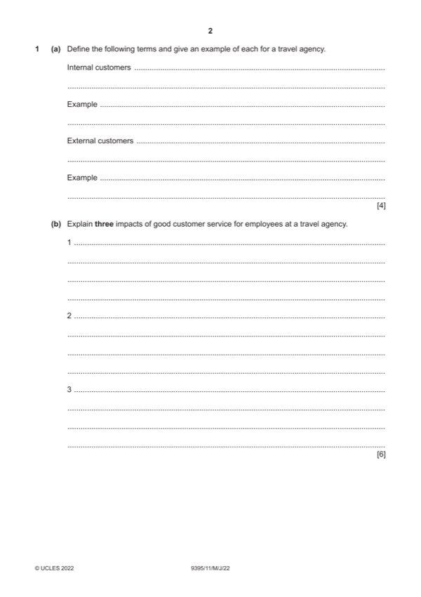

Question 1

Original paper page 2
Part 1(a) — solution
Define the following terms and give an example of each for a travel 4
agency.
Award one mark for a correct definition and a second mark for a correct
example within the context of a travel agency.
Internal customers
These are members of staff within an organisation or an organisation’s
suppliers who contribute towards the service experienced by the external
customers.
Example: travel agency managers/front of house selling staff/back
office/administration staff/travel consultants
External customers
These are an organisations visitors or users.
Example: individuals buying a holiday/changing currency/going and asking
for advice
Credit any other reasonable answer.
Mark points
- Include the ideas shown in the solution above.
Part 1(b) — solution
- Positive experiences mean good relationships with the customers (1)
- This encourages good word of mouth (1) and so more customers/and so
- More customers will increase the revenue of the agency (1) which may
- Staff will be happy (1) and this will mean that customers will have a good
Mark points
- Positive experiences mean good relationships with the customers (1)
- This encourages good word of mouth (1) and so more customers/and so
- More customers will increase the revenue of the agency (1) which may
- Staff will be happy (1) and this will mean that customers will have a good
Part 1(c) — solution
- Benchmarking allows standards to be set (1) these can be useful
- Benchmarking can allow specific items be measured (1) these can then
- The hotel chain may use a high performing member of the chain to set
Mark points
- Benchmarking allows standards to be set (1) these can be useful
- Benchmarking can allow specific items be measured (1) these can then
- The hotel chain may use a high performing member of the chain to set
Part 1(d) — solution
- Older students may prefer single rooms whereas younger ones may be
- The hotel may have to cater for special needs such as disabilities or
- The hotel may have to make a room available for the group to have
- The hotel may have to have entertainment facilities which may be
- There may be the need to have visiting speakers
- The hotel may be able to make arrangements for trips/speakers etc
Mark points
- Older students may prefer single rooms whereas younger ones may be
- The hotel may have to cater for special needs such as disabilities or
- The hotel may have to make a room available for the group to have
- The hotel may have to have entertainment facilities which may be
- There may be the need to have visiting speakers
- The hotel may be able to make arrangements for trips/speakers etc